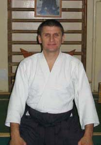
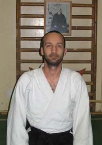

The story of Misogi Dojo
Misogi Dojo is located in the heart of Budapest and has welcomed aikido enthusiasts since 1995. Our founders set out to create a harmonious community where traditional values meet a modern outlook. Alongside technique, our practice puts great emphasis on mindful body use and mental growth. We regularly invite renowned instructors from abroad to broaden our students' horizons. Training sessions are held in a friendly atmosphere yet demand disciplined commitment. We believe aikido is not just movement, but a lifelong path that helps preserve inner peace. Beginners and advanced practitioners alike find their own pace and support each other's progress. Our classes stress gradual, injury-free training so everyone can feel safe. Modern equipment and an easily accessible location make practice comfortable. If you want to join an open, supportive community and follow your own path in aikido, you belong with us.
- üßí Ages 14‚Äì20 (Teens and high school students)
Why try Aikido?
‚û°Ô∏è Because it builds discipline, body awareness and self-confidence while teaching impulse control and effective conflict management. - üßë‚Äçüéì Ages 21‚Äì30 (Young adults starting their careers)
Why try Aikido?
‚û°Ô∏è Because it's an excellent stress reliever in the everyday rush, giving you mental focus, balance and inner calm amid challenges. - üßë‚Äçüíº Ages 31‚Äì45 (Working adults with families)
Why try Aikido?
‚û°Ô∏è Because it helps rediscover the joy of movement while providing physical and mental recharge alongside job pressure and family duties‚Äînonviolent yet dynamic. - üßì Ages 46‚Äì60 (Mature adults entering a new phase)
Why try Aikido?
➡️ Because Aikido isn't about brute force but control and awareness—an ideal practice that gently improves balance, flexibility and mental sharpness.
Instructors and short bios.
|  | Bence Zsolt dojo leader 5th dan (MNAD) 4th dan (Aikikai) |
|  | Mondik Attila deputy dojo leader 4th dan (MNAD) 4th dan (Aikikai) |